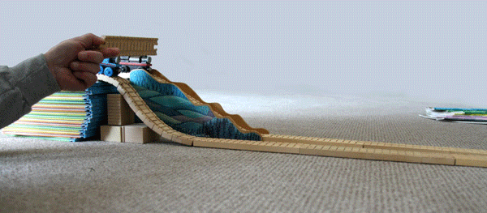
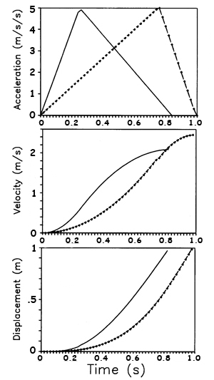
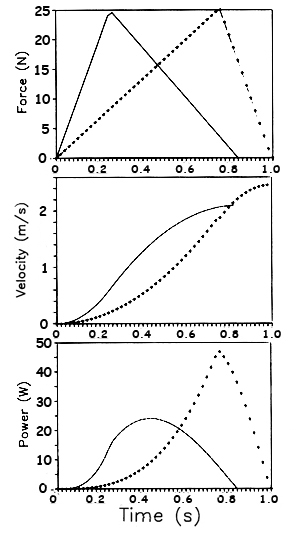

Acceleration Patterns and Movement Outcomes
Imagine an experiment in which we have two toy trains. One will roll down a straight inclined track while the other will roll down a curved track. The clip below shows that the blue train on the curved slope reaches the end of the track first even though it had to travel a greater distance. Both trains start from the same height and with the same initial velocity with only gravity causing the motion. So why did the blue train cover the greater distance in less time?

The blue train has a higher initial acceleration due to the steeper initial slope of the curved track. This allows the blue train to gain a greater velocity early. At T1, the two trains have the same acceleration but the blue train has gained more velocity and even though it has less acceleration after T1, it covers a greater distance and reaches the bottom sooner (T2).
The black train has a constant acceleration due to the constant slope of its inclined path. It linearly gains velocity until it reaches the bottom at T3.
Both trains achieve the same final velocity because they started with the same potential energy but the different acceleration paths account for the different movement outcomes (see the graphs to the left).
At the top of the hill, the blue train had the greater acceleration, and at the bottom of the hill, the black train had the greater acceleration and we can see that this difference changes the way the trains move. Dowling (1992) showed that different acceleration paths for human movement had even greater significance when the movement is constrained by the range of motion.

The
graphs to the left show two
patterns
of motion of a hand segment extending from the shoulder similar to a
shot put or boxing punch. In each case, the hand moves forward
by 1 meter at which point the elbow would be fully extended and no
further
acceleration is possible at the end of the range of motion. The
movement represented by the
solid line accelerates rapidly, achieving a final velocity of 2 m/s in
about 0.8 seconds. The movement represented by the dashed
line doesn't reach maximum acceleration until late in the movement,
achieves a higher final velocity (about 2.4 m/s) but takes almost a
full second to reach the full range.
Both movement have the same maximum acceleration and would require the same amount of force. The pattern that reaches maximum acceleration early in the movement has the shorter movement time and would be desired by a boxer. The pattern that reaches maximum acceleration late in the movement has the higher final velocity and would be desired by the shot putter.
It seems that motor learning is all that is required to produce the desired pattern for a given task. However, that is not the case and a closer examination of the power of these two strategies reveals the dependence of ballistic performance on instantaneous power.

The
graphs to the left show the
same patterns as above. In each case, the acceleration has
been
multiplied by mass to yield force (top graph). The force
values
were then multiplied by the velocity values (middle graph) to yield the
instantaneous powers which are plotted in the bottom graph.
It can be seen that the pattern associated with the short movement time (peak forces early in the movement) requires considerably less power than the pattern associated with the high final velocity (peak force late in the movement). Impulsive or ballistic movements that require high final velocities and are limited by the range of motion such as the shot put or vertical jump require large instantaneous power generation.
Adamson and Whitney were correct to assert the importance of performance on the amount of impulse but they overlooked the requirement of instantaneous power to achieve that impulse. The area under the force-time curve of the dashed line in the top graph is indeed greater than the area under the solid line. This results in the greater velocity (middle graph) but would not have been possible without the dramatically greater power shown in the lower graph.
In conclusion, the vertical jump test is a good measure of peak leg power and athletes competing in ballistic events should attempt to increase peak power in order to improve performance just as the distance runner should try to increase oxidative capacity.
Training for Increased Peak Power
You may have heard the expression that sprinters are born and not made.